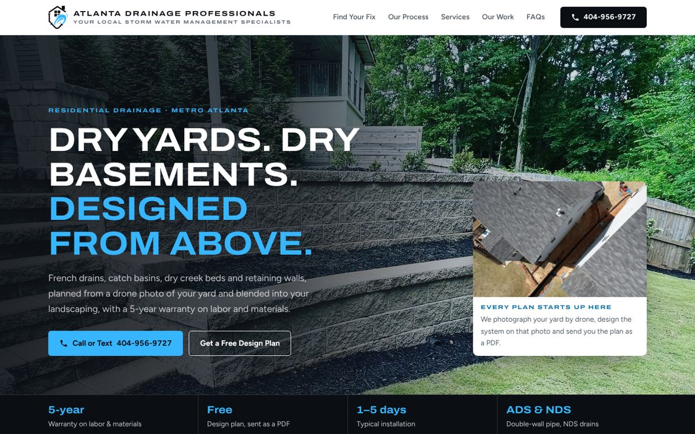
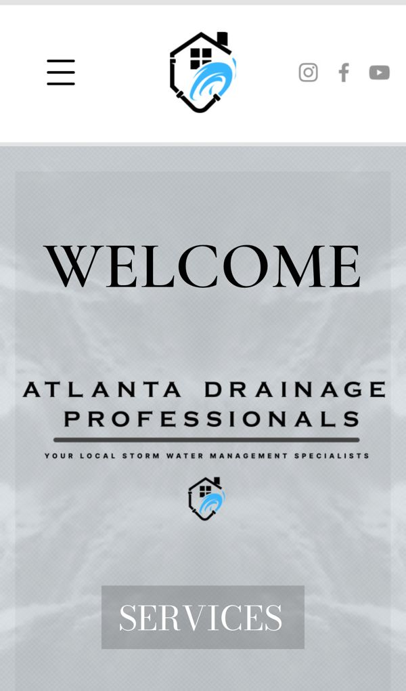

The certifications on your site show expired dates.
Your site displays three of Jarod’s credentials. Going by the dates printed on them, all three have lapsed. If they’ve been renewed, swapping in the current cards takes a minute. If a homeowner zooms in before hiring, today they’ll read expired dates.
- GSWCC Level IB Certified InspectorIssued 11/18/2022Expired 11/18/2025
- GSWCC Level II Certified Plan ReviewerIssued 12/02/2022Expired 12/02/2025
- NDS Professional Drainage ContractorIssued 11/15/2022, “valid for two years,” issued to Georgia Drainage SpecialistsExpired 11/15/2024
Read from the certificate images published on atldrainpros.com on November 17, 2026. Current cards may exist that just aren’t on the site.
A few words that need fixing.
Atlantas #1Atlanta’s #1Homepage headlineLeading the industry in(the sentence stops here)Homepage: the heading above your Instagram feed never finishessuccesfulsuccessfulHomepage, Maintenance stepconsistenlyconsistentlyHomepage, French drains
Your homepage is heavy for a phone.
Most homeowners look you up on their phone, often standing in a wet yard. Here’s what each homepage loads on an iPhone-sized screen:
Measured once each in a headless browser emulating an iPhone 13, at page load plus 3 seconds. Your current site gets its first content up quickly; the weight is everything that loads after. Real networks vary; the size and request counts are the reliable part.
What you have, and what the concept does instead.
| Area | atldrainpros.com today | The new concept |
|---|---|---|
| First screen | “WELCOME” over a gray stone texture, with a “Services” button | A finished retaining-wall yard of yours, “Dry yards. Dry basements. Designed from above.” |
| Phone first screen | A menu icon and a chat bubble; no phone number | “Call or Text 404-956-9727” up top, plus a call bar that stays on screen |
| Your drone process | One line in the process strip | The headline idea, with your own drone shots and the 5 steps from your About page |
| Helping homeowners choose | A list of services to read through | “Where is the water going?”: pick the problem, see the systems that fix it, add it to the consultation |
| Trust | 5-year warranty in a small box; expired certificates | 5-year warranty, free PDF design plan, 1–5 day installs and ADS/NDS materials in a bar under the hero |
| Your work | Photos scattered across pages and sliders | An “In the trenches” gallery from first trench to finished yard, with Brandon B.’s review |
| FAQs | A separate page | Six straight answers on the homepage: cost, timing, warranty, pipe, clogs |
| Contact | A Wix form | Same fields and checkboxes, sent as a ready-written text to your “Call or Text” number |




How we’d do it.
- Step 1A 15-minute call
Walk through the concept. Keep what you like, change what you don’t.
- Step 2Your real details
Current certifications, service area, more Google reviews and before-and-after drone shots.
- Step 3Launch on atldrainpros.com
Your domain, your Instagram, your phone. Wix stays optional.
- OptionalNever miss a rainy-day call
Instant text-back when you’re in a trench and can’t answer.